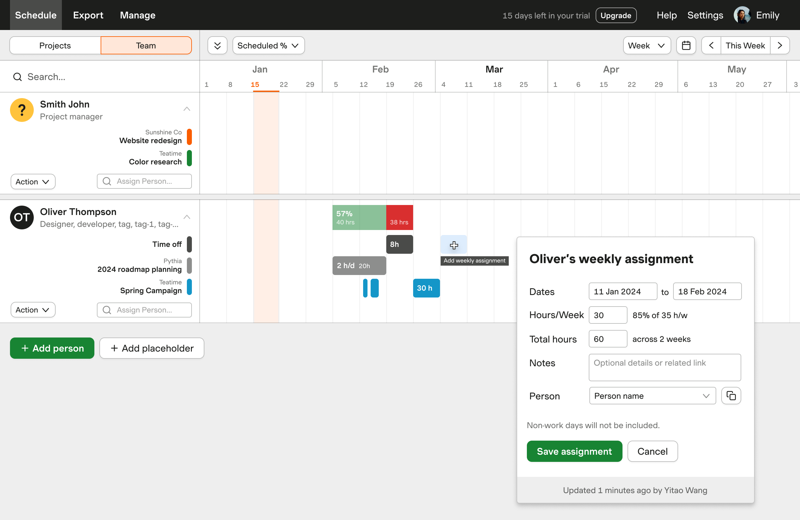

Forecast: Schedule by Week and Month
42% churn reduction by rethinking how teams plan
Forecast is Harvest's sister app—a resource planning tool with $3.66M in ARR. After 7 years in maintenance mode, 2024 marked its relaunch with a company goal to grow customer counts. I led the product strategy for the feature Schedule by Week and Month—addressing our biggest adoption blocker. The feature helped cut churn by 42% and improved NPS from 0.5 to 24.5.
The problem
Forecast only supported day-level scheduling. Through customer research, I learned that many teams don't plan at the granularity of days at all.
5 of 8 customers who tried Forecast but didn't adopt said they schedule by week or month. This was the 2nd most mentioned missing feature in cancellation reasons.
Historically, the need to "zoom out more" was the 3rd most requested feature in customer support tickets. Without digging further, we would have blindly shown more days on screen, misunderstanding the fundamental need to plan at a totally different level.
Deciding what to build first
Task-level planning was the #1 cancellation reason. Week/month planning was #2. Both had strong demand—which should we prioritize?
Our company goal was to increase Forecast customer counts, which meant acquisition mattered more than retention. Task planning was a retention risk—existing customers wanted it. Week/month planning was an adoption blocker—prospects couldn't even start using Forecast because it didn't match how they worked.
To grow customer counts, we needed to remove adoption barriers first. We prioritized week/month view, then shipped task planning the following year.
Evolving the interaction model
My original design gave each project a "type"—day, week, or month—and users could only manage project assignments at that level. I thought this could be a useful constraint that "forced" users to plan at the intended level, and the assignment durations could all stay nice and tidy.
During a design critique, I was challenged that this could be an "one-way door" decision. After testing with customers, I realized my original concept optimized for tidiness at the expense of real workflows. Users would encounter confusing restrictions—unable to edit certain projects in "unmatched" views, with no clear reason why.
The final design: any project can be scheduled and edited at any granularity, in any view. Users have full flexibility to adapt as their planning needs change.
Original: Required to switch to Day view to edit a "Day type" project.
Final: Flexible assignment viewing and editing across all views.
Shipping in time for GTM
Week view took 4 months to build—longer than expected. The bottleneck was performance: all heatmaps were calculated client-side, and rendering 7x more assignments caused significant delays for large accounts.
Month view would make this worse. After seeing what happened with week view, I brought engineering and design together to discuss how we could pre-empt this risk. The team came up with a great idea to aggregate assignments in month view by default, only expanding on user action to reduce the initial render load.
I proposed phasing the rollout to hit our October GTM deadline:
- V1: View-only month view
- V2: Create and edit monthly assignments
- V3: Fully editable for all assignment types
We debated whether V1 alone was enough for GTM. I pushed for V2 as the minimum—a view-only month didn't mirror how users actually work. V2 was successfully shipped 5 days before the GTM soft launch, and the relaunch drove 300+ new connected trials in less than 24 hours.
Outcomes
- 42% reduction in churn rate (from 4.3% to 2.51%) within a year
- NPS improved from 0.5 to 24.5 over 4 months
- 132% YoY increase in weekly view users
- 60% increase in users creating non-daily assignments
Reflections
On prioritization: User requests don't come with business context attached. Task planning was louder in cancellation surveys, but week/month planning was the bigger barrier to growth. Mapping user pain to business levers changed which problem we solved first.
On iteration: The "project type" model felt elegant in the abstract but created friction in practice. Getting challenged in critique—and staying open to being wrong—led to a simpler design.
On shipping: The phased approach let us hit a hard deadline without sacrificing the minimum viable experience. Knowing the difference between "good enough" and "not enough" was what let us ship quality products on time.